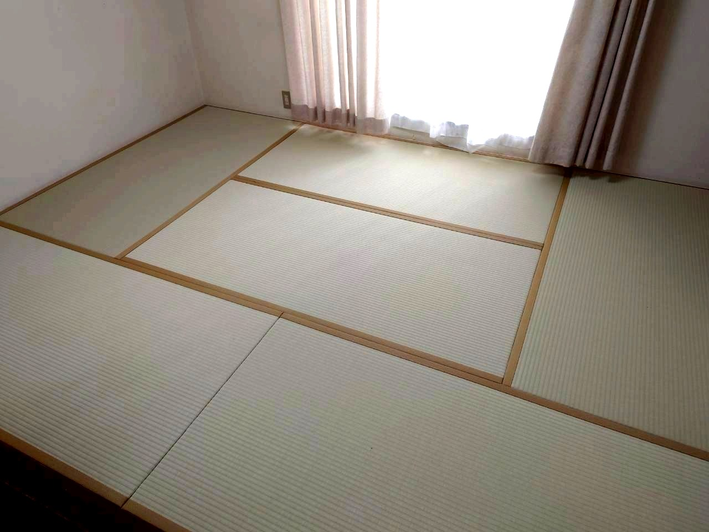
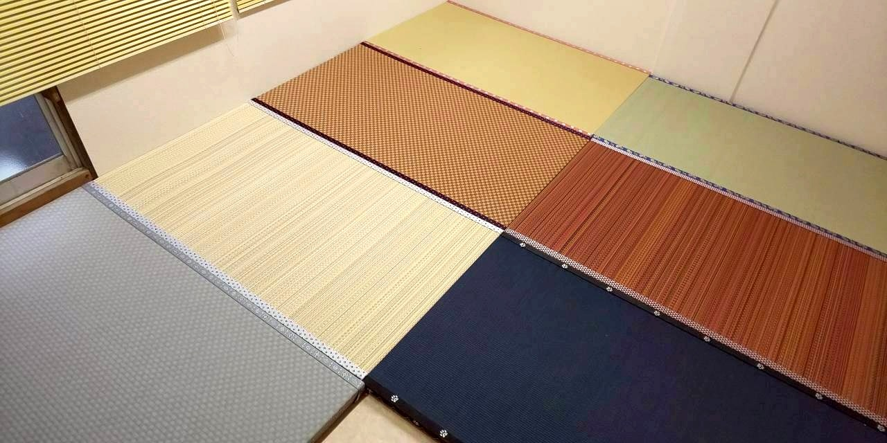
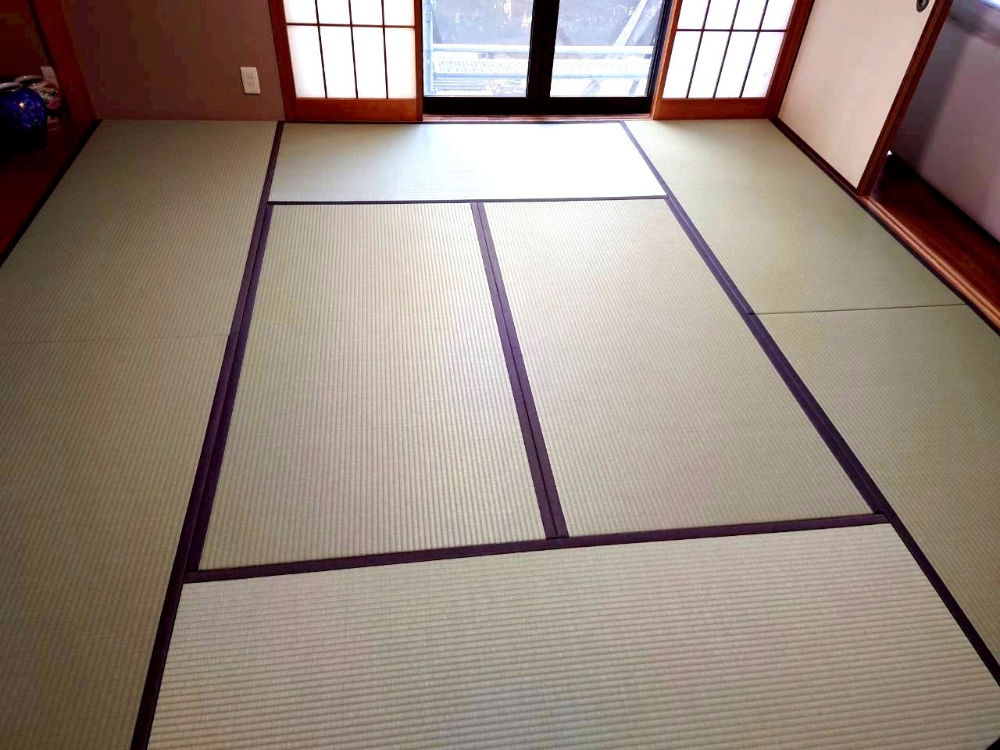
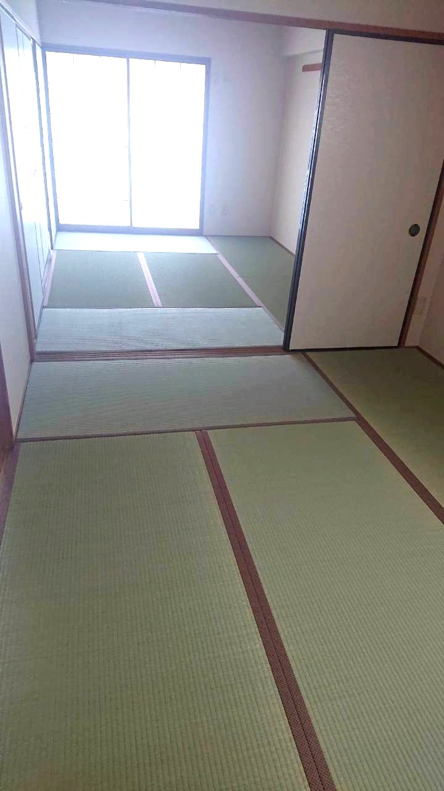
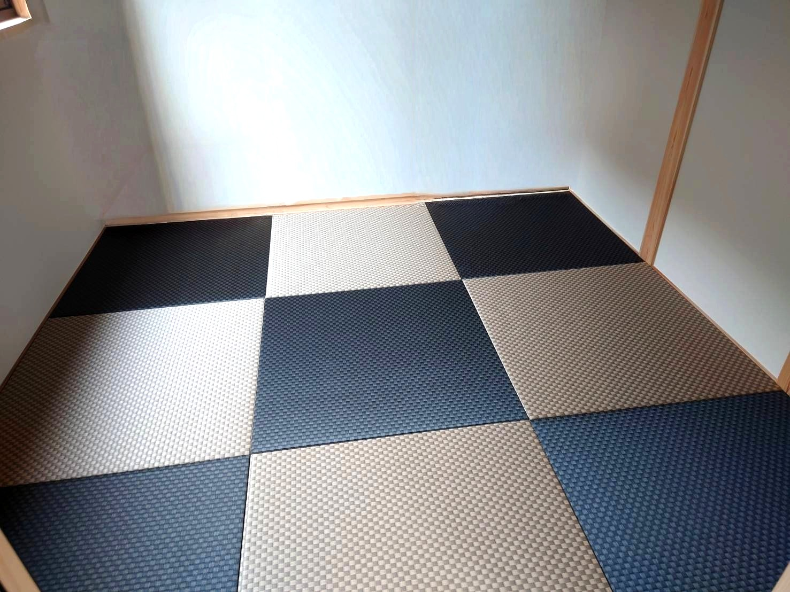
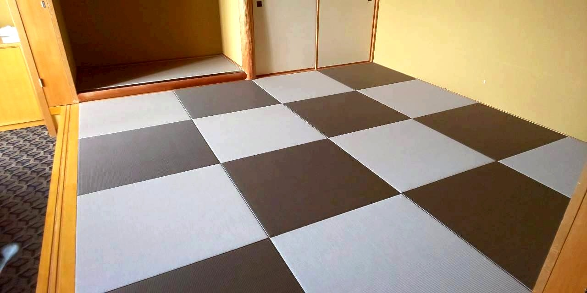
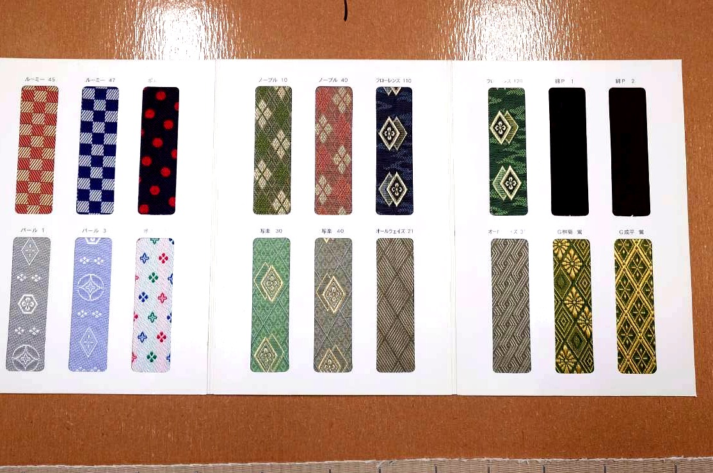

畳って、実はすごい機能を持っています。い草の香りに癒されるだけでなく、
空気清浄や調湿、集中力アップまで。ここでは畳の機能と、当店で扱っている畳表の種類をご紹介します。
い草・畳の機能
集中力を高める効果
和室の方が集中力が高まるという研究結果があります。い草の香りに含まれるフィトンチッドが、リラックスしながら集中できる環境をつくります。
※北九州市立大学 森田洋教授の研究
調湿・保温・断熱
畳は部屋の湿度を吸ったり吐いたりして、約40%に調整してくれます。夏はサラッと、冬はほんのり暖かい。四季のある日本の気候にぴったりの床材です。
空気清浄効果
い草は二酸化窒素やホルムアルデヒドなどの有害物質を吸着します。天然の空気清浄機のような存在。シックハウス対策にもなります。
香りのリラックス効果
新しい畳の香りは森林浴と同じ癒し効果があります。バニリンというアロマ成分が含まれていて、気持ちを落ち着かせてくれます。
畳表の種類

天然い草表
主に熊本県産のい草を使用しています。い草は真冬に苗を植え付け、真夏に刈り取り。その後、泥染めをして乾燥させることで、あの独特の清々しい香りとツヤが生まれます。使い込むほど飴色に変化していく経年美も、天然い草ならではの魅力です。

ダイケン和紙表（和紙素材）
機械すき和紙でできた畳表です。ダニ・カビの発生がい草に比べわずかで、ペットの爪や玩具による傷もつきにくい。豊富なカラーを楽しめます。フローリングとの相性も良く、モダンな空間づくりにぴったりです。
ダイケン公式サイトはこちら →
セキスイ美草（樹脂素材）
樹脂に無機材料を配合した畳表です。カビ・ダニに強く、色あせしにくい。水や汚れにも強いので、お手入れも簡単。カラーバリエーションが豊富で、和室だけでなく洋室にもマッチします。ペットやお子様のいるご家庭に特におすすめです。
セキスイ美草 公式サイトはこちら →カラーバリエーション
和室だけでなく洋室にもマッチ。コーディネートの幅が広がります。







当店では実物のサンプルをお持ちしてご自宅でお見せします。画面と実物では色の印象が違うこともありますので、ぜひ実物を手に取ってご確認ください。
畳縁も豊富にご用意

クラシカルなものからモダンなデザインまで。お部屋の雰囲気やお好みに合わせてお選びいただけます。畳縁ひとつでお部屋の印象はガラッと変わります。
まずはLINEで写真を送るだけ。
60秒で無料お見積もり。
畳のお悩み、「こんなこと聞いていいのかな」ということでも遠慮なくお問い合わせください。お見積もりは無料です。
営業時間：8:30〜17:00
定休日：日曜・祝日（土曜不定休）